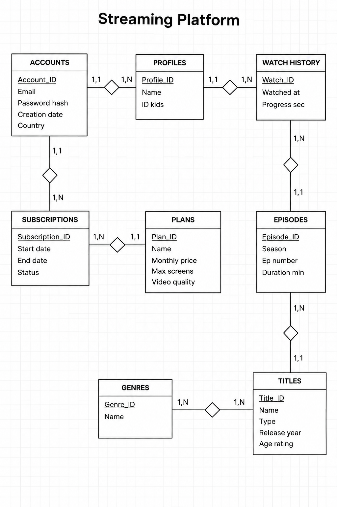
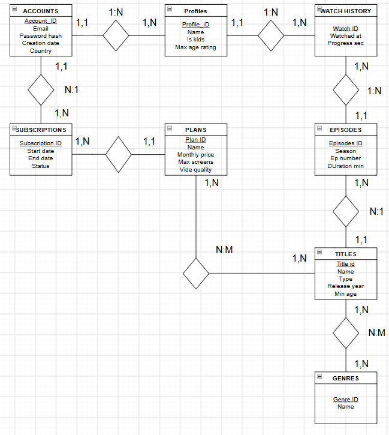

Streaming Plataformaren Datu-Eredua
Ikus-entzunezkoen zerbitzu baterako datu-base erlazionalaren diseinua: bi E-R proposamenen analisia, Accounts/Profiles behin betiko eredua, 3NF normalizazioa eta Access inplementazioa.
1.ER Diagram Proposals
1. Proposal: Rejected
Accounts, Profiles, Watch History, Episodes, Titles, Genres, Subscriptions, Plans.

2. Proposal: Selected
Accounts, Profiles, Watch History, Episodes, Titles, Genres, Subscriptions, Plans.

3. Relational Model and 3NF Normalization
| Entities | PK (Primary Key) | FK (Foreign Key) | Attributes |
|---|---|---|---|
| Accounts | Account_ID | - | Email, Password Hash, Country, Created At |
| Profiles | Profile_ID | Account_ID | Name, ID Kids, Max age rating |
| Plans | Plan_ID | - | Name, Monthly Price, Max Screens, Video Quality |
| Subscriptions | Subscription_ID | Account_ID, Plan_ID | Start Date, End Date, Status |
| Titles | Title_ID | - | Name, Type, Release Year, Age Rating |
| Episodes | Episode_ID | Title_ID | Season, Ep Number, Duration Min |
| Plan_Titles | Plan_ID, Title_ID | Plan_ID, Title_ID | N:M Erlazioa |
| Genres | Genre_ID | - | Name |
| Title_Genres | Title_ID, Genre_ID | Title_ID, Genre_ID | N:M Erlazioa |
| Watch_History | Watch_ID | Profile_ID, Episode_ID | Watched At, Progress Sec |
3NF Normalization: All fields are atomic (1NF), they have full dependency on the PK (2NF), and all transitive dependencies have been removed (3NF).
4. Description
This database models a streaming platform with films and series. It manages accounts, viewer profiles, subscriptions and payments, the content catalog, and the viewing history of each profile. It is designed in Third Normal Form (3NF).
Accounts and profiles: An account stores the login data (unique email, password hash, country and creation date). Each account can have several profiles, one for each person who uses it. A profile has a name, a Kids flag (Is_Kids) and a maximum age rating. A Kids profile can only see content whose age rating is lower than or equal to that limit.
Plans, subscriptions and renewals: Plans define the tiers with their monthly price, maximum number of screens and video quality. A subscription links an account to a plan and records its dates, status and automatic renewal setting. Each subscription has many renewals, each with its billing period, amount and payment status. An account can have only one active subscription, and only successful renewals extend access.
Content catalog: Content holds what is common to every title: title, description, release year and age rating. It is specialized into Films (with their duration) and Series (total and disjoint, so every title is exactly one of them). Series are divided into Seasons, and each season contains Episodes with a number, name and duration. Episodes inherit the age rating of their series. Genres classify content through the junction table Content_Genres, since a title can have several genres and a genre applies to many titles.
Viewing history: Film_Views and Episode_Views record what each profile watches, with the date and time and the progress in seconds. This keeps a separate history per profile and allows “continue watching”.